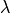
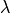

Maps
The maps module aims to make handling of astronomical maps (mainly in Radio
and Infrared astronomy) easier. So far it supports maps in the FITS, GILDAS and
MIRIAD data formats. It wraps functions of GILDAS and MIRIAD and provides own
new functions written with python on the basis of pyfits.
It is using a ‘Name Convention’ for ease of use. Meaning that the file name
already includes basic information about the map it contains. A Name that
follows this ‘Convention’ is eg: M33_30m-HERA_CO21_Ta*_12_cube.fits
All items MUST be seperated by an undescore (_) and HAVE to include at
minimum the following properties:
- source
- telescope
- wavelength OR frequency OR lineName
- flux unit
- resolution
These items are transferred to variables of the Map class that is used to
handle the maps. See below or in the tutorial for more explanation.
Additionaly the Map Class recognizes all following items as comments. In the
name example above cube would be a comment. Comments are not transfered to
individual internal variables of the map objects but are passed on as a list to
the single variable comments.
The last item is followed by the files extension:
- .fits -> FITS
- .gdf, .mean, .velo, .width, .lmv -> GILDAS
- nothing -> MIRIAD (Miriads file format uses directories to store the data.)
Maps that are not following this name convention are not supported. This is
to assure that all parts of the program work, since they strongly depend on the
parameters passed on by the name, as is explained below or in the tutorial.
Altough this is somewhat redundant to the header information of the files, it
has been decided to go that way since unfortunately not all headers are kept up
to date and manipulating the file name is easier to do.
The maps module tries to keep track if a variable that should go into the
header of a fits file is changed and up-dates the header subsequently (Maybe
not true in all cases, though.).
Using this name convention has another benefit since it makes the life of your
fellow astronomers easier when they have to work with your data since they
readily know their most important basic properties.
Main
-
class astrolyze.maps.main.Map(map_name, name_convention=True)
Map is the parent Class for the maps-package. It contains all
functions that are common to all the supported map-formats, i.e. Fits,
Gildas and Miriad. This class is only supposed to be called through
the FitsMap, GildasMap, and MiriadMap classes.
| Parameters : | map_name: string :
The name and path of the file that is to be intialized to the maps
package.
name_convention: True or False :
Only files following the name_convention are supported.
|
|---|
Methods
-
changemap_name(source=None, telescope=None, species=None, fluxUnit=None, resolution=None, comments=None, dataFormat=None, prefix=None)
This function can be used to change the names of the maps and make a
copy of the file to the new name and/or location.
-
flux_conversion(x=None, major=None, minor=None, nu_or_lambda='nu', direction=None)
Calulates conversion between K.km/s and Jy/beam and vise versa.
| Parameters : | x: float [GHz] :
Wavelenght/frequency. Defaults to the frequency of the loaded map,
i.e. self.frequency
major: float :
Major Axis Beam (arcsec). Default None, i.e. using self.resolution.
minor: float :
Minor Axis Beam(arcsec). Default None, i.e. using self.resolution.
nu_or_lambda: string :
Choose type of x: frequency = 'nu' or wavelenght =
'lambda'.
direction: string :
choose conversion direction 'kelvin_to_jansky'
means Kelvin to Jansky; 'jansky_to_kelvin' Jansky to Kelvin.
|
|---|
Notes
Please note that if self.frequency and self.resolution are correctly
set, this functions does not need any input.
-
get_beam_size()
Calulates the Beamsize in m^2 if the distance to the source is given
if not given the PixelSize is in sterradian.
Notes
The formula used is:
-
returnName(source=None, telescope=None, species=None, fluxUnit=None, resolution=None, comments=None, dataFormat=None, prefix=None)
Returns the Name corresponding to the Name convention. Single keywords
can be changed.
This function is useful to generate a writeout name for a changed file
without overwriting the current self.map_name.
| Parameters : | All Parameters from the “Naming Convention” plus the new prefix. : |
|---|
FitsMap
-
class astrolyze.maps.fits.FitsMap(map_name, name_convention=True)
Fits Map manipulation making extensive use of the
pyfits package.
Methods
-
change_unit(final_unit, frequency=None)
Changes the unit of a map in an automated way.
| Parameters : | final_unit: string :
- The unit to change the map to. Possible are:
- Jy/beam: "JyB", "Jy/Beam"
- Jy/pixel: "JyP", "JyPix", "JyPix"
- MJy/sterad: "MJyPsr", "MJy/sr"
- Temperature: "Tmb", "T", "Kkms"
frequency: float :
Can be used if self.frequency is NaN. The frequency (in GHz) is
needed for conversions between temperature and Jansky/Erg scale.
Other conversions don’t need it.
|
|---|
Notes
Warning
This function is still in developement and not all
conversions may work properly.
-
gauss_factor(beamConv, beamOrig=None, dx1=None, dy1=None)
Caluclates the scaling factor to be applied after convolving
a map in Jy/beam with a gaussian to get fluxes in Jy/beam again.
This function is a copy of the FORTRAN gaufac function from the Miriad
package, which determine the Gaussian parameters resulting from
convolving two gaussians. This function yields the same result as
the MIRIAD gaufac function.
| Parameters : | beamConv: list :
A list of the [major axis, minor axis, position_angle]
of the gaussion used for convolution.
beamOrig: :
Same format as beamConv but giving the parameters of the original
beam of the map. As Default the self.resolution list is used.
dx1, dy1: floats :
Being the pixel size in both dimensions of the map.
By default the CDELT1 and CDELT2 keywords from the
fits header are used.
|
|---|
| Returns : | fac: :
Factor for the output Units.
amp: :
Amplitude of resultant gaussian.
bmaj, bmin: :
Major and minor axes of resultant gaussian.
bpa: :
Position angle of the resulting gaussian.
|
|---|
-
get_pixel_size()
Calulates the Area of a pixel in m^2 if distance is given
if not given the PixelSize is in sterradian.
-
pix2sky(pixel, degrees_or_equatorial='degrees')
Calculates the Coordinates of a given Pixel.
| Parameters : | pixel: list :
Pixel of the map; [x, y].
degrees_or_equatorial: string :
Either "degrees" or "equatorial". Choosing the
Format of the coordintates to be returnes.
Defaults to "degrees".
|
|---|
| Returns : | coordinate: list :
The coordinates corresponding to pixel. Either in Degrees or in
Equatorial coordinates, depending on the parameter
degrees_or_equatorial.
|
|---|
-
read_aperture(position, apertureSize=0, backgroundSize=0, output=False, annotation=False, newAnnotation=False)
Extract the sum and mean flux inside an aperture of a given size and
at a given position..
This function can be used to read the flux in the area of a
circular aperture, as well as to correct for the
background flux.
| Parameters : | position: list :
The position in RA,DEC where the aperture is to be applied.
The Format has to be either:
- [‘RA’,’DEC’] with strings representing equatorial
coordinates, e.g. [‘01:34:32.8’, ‘+30:47:00.6’].
- or:
- [RA, DEC] where RA and DEC being the coordinates in Grad.
apertureSize: float [arcsec] :
The diameter of the aperture to be applied.
backgroundSize: float [arcsec] :
The Size of the Anulli in which the background is
to be estimated. The number to be given here
correspond to the diameter of the circle in [arcsec ] descibing
the outer border of the annuli, measured from
the position given in position. Thus, the background
is measurd in the ring described by apertureSize and
backgroundSize. Default is 0 and thus no background substaction
is applied.
output: True or False :
If True the function reports the calculated values during
execution.
annotion: logical :
If True a kvis annotation file "apertures.ann" containing the
aperture used to integrate the flux is created. Default is False,
i.e. not to create the aperture.
newAnnotation: logical :
If True "apertures.ann" is overwritten. If False an old
"apertures.ann" is used to append the new apertures. If it not
exists a new one is created. The latter is the default.
|
|---|
| Returns : | List: [Sum, Mean, Number of pixels] :
|
|---|
Notes
The pixel sizes have to be quadratic for the algorithm to work. It
measures a circle by counting the pixels from the central pixel
corresponding to the given coordinate.
-
read_flux(position)
Returns the value of the pixel that corresponds to the
given positions of RA, DEC (J2000) in units of equatorial
coordinates or degrees.
| Parameters : | position: list :
The position in RA,DEC where the aperture is to be applied.
The Format has to be either:
- [‘RA’,’DEC’] with strings representing equatorial
coordinates, e.g. [‘01:34:32.8’, ‘+30:47:00.6’].
- or:
- [RA, DEC] where RA and DEC being the coordinates in Grad.
|
|---|
| Returns : | flux: float :
The flux at the given position.
|
|---|
See also
sky2pix, astFunc.equatorial_to_degrees, wcs.wcs_sky2pix
-
sky2pix(coordinate)
Calculates the Pixel corresponding to a given coordinate.
| Parameters : | coordinate: list :
Either [‘RA’,’DEC’] in equatorial coordinates or [RA, DEC] in GRAD.
|
|---|
| Returns : | pixel: List :
[x, y]; the pixel coordinates of the map.
|
|---|
-
toGildas(prefix=None)
Changes the current map to the Gildas Format.
The function takes changes to the map_name variables
made outside of functions into account via
astrolyze.maps.main.Map.returnName() into account.
| Parameters : | prefix: string or None :
Path to location where the new gildas file will be stored.
The default is None which defaults to the current self.prefix.
|
|---|
Examples
To continue working with the gildas map use:
To only store the current map in the gildas format and go on
working with the fits file use:
Here map is an Instance of the FitsMap class.
-
toMiriad(prefix=None)
Changes the current map to the Miriad Format.
The function takes changes to the map_name variables
made outside of functions into account via
maps.main.Map.returnName() into account.
| Parameters : | prefix: string or None :
Path to location where the new gildas file will be stored.
The default is None which defaults to the current self.prefix.
|
|---|
Examples
This function works like
maps.mapClassFits.FitsMap.toGildas() and the same
Examples apply.
-
update_file(backup=False)
Writing changes to the self.data and/or self.header to the current
file.
| Parameters : | backup: True or False :
If True a copy of the original file is created having the extension
"_old" after the file endind, i.e. some_name.fits -> some_name.
fits_old.
|
|---|
| Returns : | FitsMap: Instance :
|
|---|
Notes
If all variables that define the map name () are unchanged the current
file is overwritten else
GildasMap
-
class astrolyze.maps.gildas.GildasMap(map_name, name_convention=True)
Wrapping GILDAS functions to use them inline with Python.
Methods
-
custom_go_spectrum(coordinate=False, size=False, angle=0)
This function uses the go spectrum command from GREG to plot
the spectra in a region given by size around the cooridinate given
by coordinate.
| Parameters : | coordinate: list :
A list with the coordinates in floats in units of Degrees, or in
string for equatorial coordinates. Default to False which means
that the center of the map, determined from the map header, is
used.
size: list :
The region around the coordinate from which spectra are plotted
in arcsec, e.g. size = [50, 50] means a region of 50x50 arcsec
around the given cooridnate. Defaults to None, which translates to
size = [0, 0] which in turn is interpreted as the full map size
by GREG.
angle: float [degrees] :
Needed if the map is rotated to get the correct offsets. Defaults
to 0.
|
|---|
-
goRot(angle, prefix=None)
Wrapper to the GREG go rot command, which rotates maps around their
central coordinate stored in the header.
| Parameters : | angle: float [deg] :
prefix: string :
The path where the output is to be stored if different
from the current prefix of the map.
|
|---|
| Returns : | GildasMap Object: Instance for the reprojected map. :
|
|---|
Examples
To change the central coordinate first use
maps.gildas.GildasMap.reproject() e.g.:
>>> map = map.reproject(coord=['new_RA_string','new_DEC_string'])
>>> map.goRot(45)
-
lmv(fileout=None, prefix=None)
- Wrapper to the lmv command of Class to extract spectra from a
- spectral cube.
| Parameters : | fileout: string :
The name of the class file to write the spectra to. Defaults to
the map_name with .30m ending.
- prefix: string
The path were the class file will be stores. Defaults to
the current path.
.. Tested and working. :
|
|---|
-
mask(polygon, prefix=None)
Wrapper to the GREG task mask:
| Parameters : | polygon: string :
path to a GILDAS polygon file with ending ".pol"
prefix: string :
The path where the output is to be stored if different
from the current prefix of the map.
|
|---|
| Returns : | mapObject: The masked map object. :
|
|---|
Examples
>>> map.mask('poly/sourceA.pol')
-
moments(velo_range=[0, 0], threshold=0, smooth='YES', prefix=None, comment=None)
Wraps the GREG task moments creating the first three moments
of the map.
| Parameters : | velo_range: list :
Velocity range for the integration.
threshold: float :
Value under which pixels are blanked.
smooth: string :
One of Either "NO" or "YES". Controls
if the map is smoothed before applying the cut threshold. Getting
rid of noise peaks over the threshold.
Defaults to 'YES'
prefix: string :
The path where the output is to be stored if different
from the current prefix of the map.
comment: string :
Optional comments to be added to the new map name.
|
|---|
| Returns : | mean : MapObject
The zeroth moment, i.e. the integrated intensity, is returned as a
GildasMap object.
|
|---|
-
quick_preview(save=False, filename=None)
Plotting the map and optionally save the figure.
| Parameters : | save: True or False :
Choose wether or nor to save the figure.
filename: string :
The filename to for the saved plot. If None defaults to
'quick_preview.eps'.
|
|---|
-
reproject(template=None, coord=None, prefix=None, keep_pixsize=False)
Wraps the GREG task reproject. Either use template or coord.
| Parameters : | template: string :
Full path to a map in GDF Format whose central
coordinate and pixel size will serve as a template.
coord: list :
List of coordinate strings in RA DEC (J2000) that
will become the new centre of the map.
prefix: string :
The path where the output is to be stored if different
from the current prefix of the map. If None the current
self.prefix of the GildasMap instance is used.
keep_pixsize: bool :
If False reproject guesses the new pixel sizes after reprojection
these are normally smaller than the original ones.
If True the old pixel sizes are enforced.
|
|---|
| Returns : | GildasMap Object: Instance for the reprojected map. :
|
|---|
| Raises : | SystemExit :
If both template and coord are not None.
ValueError :
If keep_pixsize is not a boolean.
|
|---|
References
For more information on the Gildas task see:
.. [R1] www.iram.fr/GILDAS/
Examples
>>> map.reproject(coord = ['1:34:32.8', '30:47:00.6'])
>>> map.reproject(template = 'M33_SPIRE_250_JyB_18.1.gdf')
-
save_figure(name=None)
Helper function that saves the current plot.
-
set_defaults()
Reset all selection criteria.
-
smooth(new_resolution, old_resolution=None, prefix=None)
Wrapper to the GREG task gauss_smooth.
| Parameters : | new_resolution: float or list :
The resulting resolution after the smoothing.
It can be:
- a float: i.e. the final major and minor beamsize.
The position angle will default to 0.
- a list with two floats: [major_axis, minor_axis]. The
position angle defaults to 0.
- a list with three floats: [major_axis, minor_axis,
position_angle].
old_resolution: float or list :
Same format as new_resolution. Defaults to self.resolution of the
map instance.
prefix: string :
The path where the output is to be stored if different
from the current prefix of the map.
|
|---|
Notes
Warning
The gauss_smooth Task from GILDAS only gives correct output
units when the map is on a temperature or “per pixel” scale.
Maps in Jy/Beam won’t be in Jy/Beam after smoothing.
-
spectrum(coordinate, fileout=None, prefix=None, create_spectrum=True)
- Wrapper to the spectrum command from greg that extracts
- a spectrum from a cube at a given positions. By default it also creates
a 30m file readable by class from the table.
| Parameters : | coordinate: list :
A list with the coordinates in floats in units of Degrees,
or in string for equatorial coordinate.
- fileout: string
The name of the table where the spectrum will be stored.
Default is the same name as the map with ".tab" as ending.
- prefix:
The path to the folder where the newly created file will be
stored. Defaults to the prefix currently stored in self.prefix.
- create_spectrum: True or False
Turn the creation of a 30m with the spectrum of False or on
True.
|
|---|
-
toFits()
Converts the actual map to a Fits map.
| Returns : | FitsMap Object. : |
|---|
Examples
With:
>>> map = gildasMap('M33_MIPS_24mum_JyB_5.gdf')
>>> map = map.toFits()
it is possible to continue working with the fits map, using the
maps.fits.FitsMap class.
-
toMiriad()
Converts the actual map to a Miriad map.
| Returns : | MiriadMap Object. : |
|---|
Examples
With:
>>> map = gildasMap('M33_MIPS_24mum_JyB_5.gdf')
>>> map = map.toMiriad()
it is possible to continue working with the Miriad map, using
maps.miriad.MiriadMap class.
MiriadMap
-
class astrolyze.maps.miriad.MiriadMap(map_name, name_convention=True)
Methods
-
smooth(new_resolution, old_resolution=None, scale='0.0')
Smooths a miriad map to the new resolution. TODO Update to
new reoslution scheme!!!!!
| Parameters : | new_resolution: float or list :
The resolution in of the smoothed image.
Can be a:
- float: Output beam has same major and minor axis [arcsec] and
the position angle (PA) [degrees] is 0.
- A list with two entries:
The major and minor axis. PA is 0.
E.g. [major_axis, minor_axis ]
- A list with three entries:
[major_axis, minor_axis, PA]
old_resolutio: float :
If None the self.resolution information is taken into account.
scale:string :
|
|---|
| Returns : | MiriadMap Object: :
|
|---|
-
toFits()
Converts the actual map to a Fits map.
| Returns : | FitsMap Object. : |
|---|
Examples
With:
>>> map = miriadMap('M33_MIPS_24mum_JyB_5')
>>> map = map.toFits()
it is possible to continue working with the Fits map, using
maps.fits.FitsMap class.
-
toGildas()
Converts the actual map to a Gildas map.
| Returns : | GildasMap Object. : |
|---|
Examples
With:
>>> map = miriadMap('M33_MIPS_24mum_JyB_5')
>>> map = map.toGildas()
it is possible to continue working with the Fits map, using
maps.gildas.GildasMap class.
-
toMiriad()
Copies the actual map changing the name such that it takes changes in
keywords into account.
| Returns : | MiriadMap Object. : |
|---|
Examples
With:
>>> map = miriadMap('M33_MIPS_24mum_JyB_5')
>>> map = map.toMiriad()
it is possible to continue working with the Miriad map, using
maps.gildas.MiriadMap class.
Stack
-
class astrolyze.maps.stack.FileStack(folder)
Methods
-
copy_structure(old_prefix, new_prefix)
Copies a folder structure from old_prefix to new_prefix. To assure all
folders exists before working with or copying data.
| Parameters : | list: list :
A list containing the relative or absolute paths to files.
old_prefix: string :
The old path to the folder structure that has to be copied. Has to
actually appear in all the strings in list.
new_prefix: string :
The path to where the folder structure is to be copied.
|
|---|
Notes
This is usefull if one is working on many files stored in several
sub-folders retrieved using get_list().
Examples
Say the folder structure is like this
>>> ls ../modified/
co10/
co21/
>>> ls ../modfied/co10/
map1/
map2/
>>> ls ../modified/co21/
map1/
map2/
This can be copied to say ../even_more_modified by doing as follows:
>>> from astrolyze.maptools import *
>>> list = maptools.get_list(../modified)
>>> maptools.copy_structure(list, old_prefix='../modified',
>>> new_prefix='../even_more_modified')
-
get_list(data_format=None, depth=False)
Loading a list of files in all subfolders.
| Parameters : | folder: string :
The path to the folder that has to be parsed.
data_format: string :
Search for specific files containing the string, e.g.
‘.fits’
depth: integer :
The steps into the subfolder system. Defaults to maximum depth.
|
|---|
| Returns : | final_list: array :
Array with the string to the files in the folder and sub folders.
folder_list: :
Array with the strings to the folders. Only if depth is set.
|
|---|
-
unifyResolution(resolution=False, folder='smooth', scaling='')
Approved.
Spectra
Class
-
class astrolyze.spectra.class_.ClassSpectra(mapName, nameConvention=True)
Provides some usefull automated functions to work on Class
Spectra in an convenient way.
Examples
Extracting a spectra at a given position from a spectral cube can be done
as follows
>>> from astrolyze.spectra import *
>>>
>>> cube = ClassSpectra(filename)
>>> coordinate = ['1:34:7.00', '+30:47:52.00']
>>> cube.get_spectra_from_cube(coordinate)
Generates a 30m file with comment extract in the actual cube.prefix path.
Methods
-
get_average_spectrum(prefix=None)
Averages all spectra in a cube.
| Parameters : | prefix: string :
The new path where the averaged spectrum will be stored.
|
|---|
Notes
So far no selection is made so the files of the input file have to be
consistent.
-
get_region_from_cube(coordinate, angle=0, prefix=None, accuracy=10)
The same as :py:func:get_spectra_from_cube but returns all spectra
found inside a circular region arounf coordinate and in a radius of
accuracy arcsec. (“set match “‘accuracy’)
-
get_spectra_from_cube(coordinate, angle=0, prefix=None, accuracy=2, region=False)
Extracts one spectra at the position of coordinates from a
spectral cube.
| Parameters : | coordinate: list :
Equatorial coordinates, e.g. [‘1:34:7.00’, ‘+30:47:52.00’]
angle: float :
If the cube was rotated before the angle has to be specified
to calculate the correct offset.
prefix: string :
The new path where the averaged spectrum will be stored.
accuracy: float :
The tolerance in arcsec to find a spectra corresponding to the
given coordinate.
region: True or False :
Returns either all spectra found True or only the first
False.
|
|---|
| Returns : | 30m file :
With the first spectrum in the list of spectra within the accuracy
range with the given coordinate.
|
|---|
-
quick_view()
Helper Functions that displays the first spectrum of the loaded
file.
-
save_figure(name=None)
Helper function that saves the current plot.
-
set_defaults()
Reset all selection criteria.
SEDs
-
class astrolyze.sed.sed.Sed(source_name, coordinate, flux_array)
This class handles a single SED. Basically it is able to fit Fitting, plotting and so on.
It should contain the data, fitting,
Methods
-
grey_body_fit()
”
Fitting a multi componenet grey body to the input data in flux_array.
See also
- py:func:astrolyze.functions.astro_functions.grey_body_fit
-
plot_sed(axes=<matplotlib.axes.AxesSubplot object at 0x46b3d90>, nu_or_lambda='nu', color='black', linewidth=0.5, xRange='normal')
Plot a multi component greybody model.
- nu_or_lambda:
- plot against frequency 'nu' or wavelenght 'lambda'
- kappa:
- The kappa to use. 'easy' or 'Kruegel'. Please refer
to functions.astroFunctions.greyBody() for more
information.
xRange: PLEASE ADD DESCRIPTION
linewidth: float
The linewidth of the plotted lines. Default to 0.5.
- color: matplotlib conform color
- the color of the plotted lines. Default to 'black'.
-
class astrolyze.sed.sed.SedStack(folder, data_format='.fits', filein=False, coordinates=False, flux_aquisition='aperture', aperture=120, annotation=False)
Reads in the SEDs from the maps stored under the input folder at given
coordinates and creates a stack of Sed objects.
Methods
-
get_seds()
-
load_coordinates(input_file)
Loads the coordinated where the SEDs should be evaluated
from either a file or a list. Both are not possible.
| Parameters : | filein: string :
Path to file that cotains the coordinates format has to be:
source_name RA DEC
RA, DEC has to be for epoch J2000 in Equatorial coordinates,
see below for examples of the syntax.
|
|---|
| Returns : | self.coordinates: list :
self.source_names: list :
Format::
[[source_name_1, RA_1, DEC_1] , ... , [source_name_N, RA_N, DEC_N]]
|
|---|
Examples
The format of the coordinates given in the file must be in
Equatorial:
>>> equatorial_coordinates = [‘02:23:21’, ‘-02:23:21’]
-
load_file_list(folder, data_format)
Intitializes the variable self.file_list containing a list of the maps
that are to be used to create the SED.
| Parameters : | folder: string :
May contain sub-folders that are all taken into account.
data_format: string :
Supported '.fits' (Default) and '.gdf'. Maybe
extended later.
|
|---|
| Returns : | self.file_list: list :
Paths to the file in potential subfolders in under the folder.
self.maps: list :
A list with FitsMap objects. If Gildas maps are loaded they are
converted into fits maps.
|
|---|
See also
maps.main, maps.fits, maps.gildas
LTE
Functions to calculate LTE column densities.
Add Documentation.
-
astrolyze.lte.lte.calc_N(molecule, excitation_temperature, J, W)
Calculates the column density for a molecule.
!!! LOOK into the remaining Code and merge!!!
-
astrolyze.lte.lte.calc_excitation_temperature(Tb, nu)
Calculation of the excitation temperature of an optically thick 12CO line
under the assumption of LTE.
-
astrolyze.lte.lte.calc_jnu(nu, T)
Calculates needed for lte_column_density.
!!! CGS Units!!! Extend Documentations!!!
| Parameters : | nu: float :
T: float :
|
|---|
-
astrolyze.lte.lte.lte_column_density(nu, Tmb, excitation_temperature, J, Z, mu)
This function calculates the Column densities of linear molecules
Units are all to be given in cgs
Z is the array of partition function values for the corresponding
temperatures in T these are the log values of Z
Notes
Extend documentation!!!!
This script generates a dictionary storing the information of molecular
transitions.
-
class astrolyze.lte.molecule_parameter.Molecule(nu, Q, T, Eu, Aul, gu, mu, name='')
A class holding attributes that define the characteristics of an
individual tansition of a molecules.
The astrolyze.functions.astro_functions.calc_N() routine
depends on this class.
| Parameters : | nu: float :
Q: list :
The partition function of the molecule evaluated at discreet
temperatures. Given in T.
T: list :
The temperatures at which the partition functions was evaluated. The
value of Q used finally is interpolated to the excitation_temperature
give.
Eu: float :
Energy of the upper state of the transition.
Aul: float :
The Einstein coefficient. For the transition of upper-to-lower state.
gu: float :
mu: float :
name = string :
The name of the molecule.
|
|---|
Functions
astroFunctions
-
astrolyze.functions.astro_functions.LTIR(p2, kappa='Kruegel', xmin=3.0, xmax=1100.0, beamConv=True, distance=847000.0, unit='JyB')
Integration of a multi-component greybody model.
| Parameters : | p2: list :
The parameters defining the multi-component greybody model. Same format
as p in
astrolyze.functions.astroFunctions.multi_component_grey_body()
kappa: string :
The dust extinction coefficient used to describe the greybodies. See:
py:func:grey_body
xmin, xmax: float :
The integration range in units of micron. Defaults to 3 – 110 micron.
The definition of LTIR from [DA]
beamConv: True or False :
For units in Lsun the code is not well written. Hardcoded conversion
between an 28” and 40” beam. !! CHANGE !!
unit: string :
If 'Lsun' the returned integrated flux is in units of solar
luminosities (erg s^-1). For this a distance is needed. If 'JyB'
the units are Jy/beam; distance is not used.
|
|---|
Notes
Needs some work to be generally usable. For units in Jy/beam the code seems
to be safe.
References
| [DA] | Dale et al. 2001; ApJ; 549:215-227 |
-
astrolyze.functions.astro_functions.anti_line(p, y)
Inverse of a line returning the x value corresponding to a y value, i.e.
x = y/m - b.
| Parameters : | p: list :
Contains the slope and the y-axis intersection of the line [m, b].
|
|---|
| Returns : | y: value of x corresponding to y. :
|
|---|
-
astrolyze.functions.astro_functions.black_body(x, T, nu_or_lambda='nu')
Calculation of the flux density of a black body at a temperature T and a
wavelenght/frequency x.
| Parameters : | x: float or numpy array :
wavelength [GHz] or frequency [micron]; specify type in nu_or_lambda
T: float [Kelvin] :
Temperature of the black_body
nu_or_lambda: string :
Specify whether x is a frequency  'nu' or a wavelenght
 'lambda'; default is 'nu'. 'nu' or a wavelenght
 'lambda'; default is 'nu'.
|
|---|
| Returns : | Flux density in Jansky: float [Jy] :
|
|---|
Notes
This functions resembles the following formulas for input in frequency:
and for input in wavelenght:
Both formulas are scaled by 1e26, thus returning the flux in Jansky.
Examples
The function works with linear numpy arrays. Thus the black_body can be
evaluated at many points at the same time. Using matplotlib it can
also be plotted:
>>> import numpy as np
>>> import matplotlib.pyplot as plt
>>> import astrolyze.functions.astro_functions as astFunc
>>> frequency_range = np.arange(1e4, 1e7, 1e4)
>>> temperature_1 = 6000
>>> temperature_2 = 12000 # Kelvin
>>> blackbody_1 = astFunc.black_body(frequency_range, temperature_1)
>>> blackbody_2 = astFunc.black_body(frequency_range, temperature_2)
>>> figure = plt.figure()
>>> axis = figure.add_subplot(111)
>>> pl = axis.loglog(frequency_range, blackbody_1, label='T = 6000 K')
>>> pl = axis.loglog(frequency_range, blackbody_2, label='T = 12000 K')
>>> pl = axis.legend()
>>> plt.savefig('black_body.eps')
-
astrolyze.functions.astro_functions.calc_offset(central_coordinate, offset_coordinate, angle=0, output_unit='arcsec')
Calculates the offset between two coordinates.
| Parameters : | central_coordinate: list :
The reference coordinate in degrees or equatorial.
offset_coordinate: list :
The second coordinate, the offset will be with rescpect to
central_coordinate.
angle: float :
The angle in degrees, allowing rotated systems.
|
|---|
| Returns : | rotated_offset: list :
The offsets, rotated only if angle given.
|
|---|
Notes
This functions includes a correction of the RA offset with declination:
-
astrolyze.functions.astro_functions.degrees_to_equatorial(degrees)
Converst RA, DEC coordinates in degrees to equatorial notation.
| Parameters : | degrees: list :
The coordinates in degress in the format of: [23.4825, 30.717222]
|
|---|
| Returns : | equatorial: list :
The coordinates in equatorial notation, e.g.
corresponding [1:33:55.80, +30:43:2.00’].
|
|---|
-
astrolyze.functions.astro_functions.equatorial_to_degrees(equatorial)
Converst RA, DEC coordinates in equatorial notation to degrees.
| Parameters : | equatorial: list :
The coordinates in degress in equatorial notation, e.g.
[1:33:55.80, +30:43:2.00’]
|
|---|
| Returns : | degrees: list :
The coordinates in degreees, e.g. [23.4825, 30.717222].
|
|---|
-
astrolyze.functions.astro_functions.gauss1D(x, fwhm, offset=0, amplitude=1)
Calulcates 1D Gaussian.
| Parameters : | x: float or numpy.ndarray :
the x-axis value/values where the gaussian is to be caluclated.
fwhm: float :
The width of the gaussian.
offset: :
The offset in x direction from 0. Default is 0.
amplitude: :
The height of the gaussian. Default is 1.
|
|---|
| Returns : | gauss: float or np.ndarray :
The y value for the specified gaussian distribution evaluated at x.
|
|---|
Notes
The function used to describe the gaussian is:
-
astrolyze.functions.astro_functions.gauss2D(x, y, major, minor, pa=0, xOffset=0, yOffset=0, amplitude=1)
Calulcates a 2D Gaussian at position x y.
| Parameters : | x: float or numpy.ndarray :
the x-axis value/values where the gaussian is to be caluclated.
y: float or numpy.ndarray :
the y-axis value/values where the gaussian is to be caluclated.
major, minor: float :
The fwhm of the gaussian in x and y direction.
pa: float :
The position angle of the gaussian in degrees. Default is 0.
xOffset, yOffset: :
The offset in x and y direction from 0. Default is 0.
amplitude: :
The height of the gaussian. Default is 1.
|
|---|
| Returns : | gauss: float or np.ndarray :
The y value for the specified gaussian distribution evaluated at x.
|
|---|
Notes
The function used to describe the gaussian is :
where:
-
astrolyze.functions.astro_functions.generate_monte_carlo_data_line(data, errors)
This function makes a Monte Carlo Simulation of a data Set of measurements
it uses the random.gauss() function to generate a data point
from a gauss distribution, that has a mean equal to the measurement
and its standard deviation corresonding to the error of the measurement.
| Parameters : | data: list :
A list of original measurements.
errors: list :
A list of the corresponding errors.
|
|---|
| Returns : | newData: array in same format as data. :
The monte carlo simulated measurement.
|
|---|
-
astrolyze.functions.astro_functions.generate_monte_carlo_data_sed(data)
MonteCarlo Simulation of a set of flux measurements, assuming that the
measurement data follows a gauss distribution.
This function makes use of the random.gauss() function to generate a
data point from a gauss distribution, that has a mean equal to the Flux
measurement and a standard deviation correponding to the error of the
measurement.
| Parameters : | data: array :
- Same format as in grey_body_fit function:
data= [[x1, x2, x3, ...][y1, y2, y3, ...][z1, z2, z3, ...]]
with x = wavelenght/frequency, y = flux, z = error on flux.
|
|---|
| Returns : | newData: array in same format as data. :
The monte carlo simulated measurement.
|
|---|
-
astrolyze.functions.astro_functions.grey_body(p, x, nu_or_lambda='nu', kappa='Kruegel', distance=840000.0)
Calculation of the flux density in Jansky of a grey_body under assumption
of optically thin emission.
Please see Notes below for an detailed desciption assumptions and equations
used.
| Parameters : | p: list :
List of the parameters defining a grey_body, being Temperature [K],
column density or mass (dependend on the kappa used) and the grey_body
slope index beta, respectively (refer to notes for more information):
x: float or numpy array :
Wavelength [GHz] or frequency [micron];
specify type in nu_or_lambda
kappa: string :
- Chooses the dust extinction coeficient to use:
- "easy" -> kappa = nu^beta; tau = N * kappa
- "Kruegel" -> kappa = 0.04*(nu/250Ghz)^beta;
tau = M/D^2 * kappa
Please refer to Notes below, for further explanation.
distance: float :
The distance to the source that is to be modeled if kappa
"Kruegel" is used.
|
|---|
| Other Parameters: |
|---|
| | nu_or_lambda: string :
Specify whether x is a frequency 'nu' or a wavelenght
'lambda'; default is 'nu'. if lambda the input
converted to a frequency in [GHz].
|
Notes
The general equation for a grey_body is:
describing the flux coming from an solid angle
 and where
and where  is:
is:
Here we assume optically thin emission and a source filling factor of
unity. This simplyfies the equation of the grey_body to:
This script supports two versions of the dust extinction coefficient.::
A simple version without a lot of physics put into, kappa = 'easy'
which defaults to the following grey_body equation:
with N being a column density scaling factor.
The second version, kappa = 'Kruegel' uses the dust extinction
coefficient reported in [KS] which renders the used equation to:
References
| [KS] | Kruegel, E. & Siebenmorgen, R. 1994, A&A, 288, 929 |
Examples
The same examples as for black_body() apply.
-
astrolyze.functions.astro_functions.grey_body_fit(data, start_parameter, nu_or_lambda='nu', fit_beta=False, fix_temperature=False, rawChiSq=None, kappa='Kruegel', residuals=False, iterations=1000000000.0)
This function fits a multi component grey body model to an observed SED for
the optical thin case.
| Parameters : | data: array :
The obseved data. Array of shape(3, x) first row has to be the X values
(Frequency in [GHz]) of the measurements, second row the Y values
(Flux [Jy]), and the third row the Z values the errors on the
fluxes i.e.:
data = array([[X1, X2, X3, ...], [Y1, Y2, Y3,...], [Z1, Z2,
Z3, ...]])
start_parameter: array :
Array of a first guess of the parameters of the grey_body components.
The number of components is arbitrary
start_parameter = [[T1, T2, T3,...], [N1, N2, N3, ...], beta]
fit_beta: True or False :
If True Beta is allowed to vary. Default is False.
fix_temperature: True or False :
If True the Temperature is fixed allowed to vary.
rawChiSq: :
if None the function gives the reduced chisq Value. If True the
function gives chisq without dividing it by the dof
|
|---|
| Returns : | p2: list :
The final grey_body parameters that reduce the least squares for the
given dataset.
chisq/rawChiSq: :
- chisq is reduced chisq with degrees of freedom:
dof= #dataPoints-#freeFitParameters-1
|
|---|
| Other Parameters: |
|---|
| | nu_or_lambda: string :
Specify whether x is a frequency 'nu' or
a wavelenght 'lambda'; default is 'nu'.::
Don’t use 'lambda' as this part of the
grey_body() is not up-to-date.
|
Notes
A one component fit has four free parameters if beta is allowed to vary or
three if beta is fixed (one more than parameters to fit). Each additional
component adds two more free paramters to fit.
Assure that:
number of data points > number of free parameters.
-
astrolyze.functions.astro_functions.grey_body_monte_carlo(p, data, iterations)
Function to evaluate the errors in the parameters fitted with the
grey_body_fit function.
It uses Monte Carlo Simulated data (from
generate_monte_carlo_data_sed()) and performs a fit to this new data
giving back the results of the fit parameters.
| Parameters : | p: list :
data: array :
The actual measured data of the SED, same format as for
grey_body_fitFunction()
iterations: int :
Number of times new data is generated and fitted.
|
|---|
| Returns : | string: :
Containing the mean, standard deviation of the fit parameters, ready
to print out.
betaTlist: List of all fit results. Name misleading since it may not :
|
|---|
-
astrolyze.functions.astro_functions.line(p, x)
Line y = m*x + b equation. Returns y value at point x.
| Parameters : | p: list :
Contains the slope and the y-axis intersection of the line [m, b].
|
|---|
| Returns : | y: value of y corresponding to x. :
|
|---|
-
astrolyze.functions.astro_functions.line_fit(p, x, y, y_error, x_error=False, iterations=10000)
Linear Fit to data, taking either errors in y or both in x and y into
account.
| Parameters : | p: list :
Containg slope (m) and y-axis intersection (b) p=[m, b]. Same as in
line() and antiline().
x: float or list :
y: float or list :
y_error: float or list :
x_error: float or list :
The x measurment errors. If unset only errors in y are taken into
account.
|
|---|
-
astrolyze.functions.astro_functions.line_monte_carlo(p, x, y, x_error, y_error, iterations, fitIterations=1000000000.0)
Gererate an estimate of the errors of the fitted parameters determined by
the line_fit() function.
| Parameters : | p: list :
Containg slope (m) and y-axis intersection (b) p=[m, b]. Same as in
line() and antiline().
x: float or list :
y: float or list :
y_error: float or list :
x_error: float or list :
The x measurment errors. If unset only errors in y are taken into
account.
|
|---|
| Returns : | string: A string containing the results. :
BList: A list containing the fittet y-Axis intersections. :
MList: A list containing the fitted slopes. :
chisqList: A list with the chisq values. :
resultArray: Array with the mean and the standard deviations of :
slopes and y-axis intersections, i.e. [mean(M), std(M), mean(B),
std(B)]
|
|---|
-
astrolyze.functions.astro_functions.linear_error_function(p, x, y, y_error, x_error)
Error function, i.e. residual from the measured value, which has to be
minimised in the least square fit taking X and Y Error into account.
| Parameters : | p: list :
x: float or list :
y: float or list :
x_error: float or list :
y_error: float or list :
|
|---|
-
astrolyze.functions.astro_functions.linear_fit(x, y, x_error, y_error)
This function resembled the analytical solution following chaper 8 from
[TA]/
| Parameters : | x: float or list :
y: float or list :
y_error: float or list :
x_error: float or list :
The x measurment errors. If unset only errors in y are taken into
account.
|
|---|
Notes
Without errors the following holds for
y=A+BX
A = sum(x^2)*sum(y)-sum(x)*sum(x*y)/Delta
B = N*sum(x*y)-sum(x)*sum(y)/Delta
Delta = N*sum(x^2)-(sum(x))**2
This has to be checked.
References
| [TA] | “An introduction to the study of uncertainties in physicak
measurement” by John R. Taylor. |
-
astrolyze.functions.astro_functions.multi_component_grey_body(pMulti, x, nu_or_lambda='nu', kappa='Kruegel')
Combines multiple grey_body functions and returns the flux density in
Jansky for the input frequency/wavelenght.
- pMulti: nested lists
- Similar to p from
functions.astroFunctions.grey_body() but the three entries are
lists, i.e.::
pMulti = [[T1, T2, T3, ...Tn], [N1, N2, N3,...Nn], [beta]]
- x: float or numpy array
- frequency [micron] (or wavelenght Not maintained, specify type in
nu_or_lambda)
| Returns : | sum(snu): float :
All dust components summed.
snu: :
A list with the fluxes of the individual components.
|
|---|
Notes
Only one common beta for all components can be used. May be expanded to
mutliple betas if needed.
Examples
Same as for black_body, but all returned grey_bodies may be plotted.
-
astrolyze.functions.astro_functions.rotation_2d(coordinate, angle)
Implementation of the rotation matrix in two dimensions.
| Parameters : | coordinates: list of floats :
Coordinates in the unrotated system [x, y].
angle: float :
|
|---|
| Returns : | [x_rotated, y_rotated]: list of floats :
Coordinates in the rotated system.
|
|---|
units
Constant unit conversions availabe in this module are:
# constant conversion factors
#==============> Approved !!! <==========================
WattToErgs = 1e7 # 1W = 1e7 erg/s
ErgsToWatt = 1e-7 # 1W = 1e-7 erg/s
JanskyToWatt = 1e-26 # 1Jy = 1e-26 W/m2/Hz
WattToJansky = 1e26 # 1W = 1 Jy * m2 * Hz
ErgsToJansky_cm = 1e23 # 1erg/s = 1e23 Jy * cm2 * Hz * s
-
astrolyze.functions.units.Int2Lum(distance_in_pc, cm_or_m='cm')
Conversion factor to calculate luminosity from intensities
by integrating over the sky 4 pi Distance^2.
| Parameters : | distance_in_pc: float :
Distance to the source in parsecs.
cm_or_m: string :
Choose wether the out put is in cm^2 = 'cm' or in
m^2 = 'm'.
Notes :
—– :
Approved. :
|
|---|
-
astrolyze.functions.units.JyBToErgsB(input_flux, distance, wavelenght, invert=False)
Conversion between Jy/beam and ergs/beam.
| Parameters : | input_flux: float :
Flux to be converted in Jy/beam
distance:float :
Distance to the source in parsec.
wavelenght: float :
Wavelenght in  . .
r :
|
|---|
-
astrolyze.functions.units.JyBToWKpc2(input_flux, Distance, major, minor, wavelenght, invert=False)
Conversion from JyB to W kpc^-2.
| Parameters : | input_flux: float :
distance: float :
Distance to source in parsec.
major: float :
Major Axis Beam (arcsec).
minor: float :
wavelenght: float :
Wavelenght in .
invert: True or False :
Changes the direction of conversion.
|
|---|
| Returns : | float: the converted Flux. :
|
|---|
-
astrolyze.functions.units.JyBToWM2Kpc2(input_flux, distance, major, minor, wavelenght, invert=False)
Conversion between Jy/beam and W m^-2 kpc^-2
| Parameters : | input_flux: float :
distance: float :
Distance to source in parsec.
major: float :
Major Axis Beam (arcsec).
minor: float :
wavelenght: float :
Wavelenght in
invert: True or False :
Changes the direction of conversion.
|
|---|
| Returns : | float: the converted Flux. :
|
|---|
-
astrolyze.functions.units.WmToKkms(x, resolution=0, sterad=False, ToKKms=False, m2_or_cm2='m', nu_or_lambda='nu')
Conversion between W/m2 and K km/s.
| Parameters : | x: float :
wavelenght/frequency [GHZ].
resolution: float :
ToKKms: True or False :
Direction of the conversion.
sterad: True or False :
If False convert from per beam to per sterad.
m2_or_cm2: string :
Choose if conversion to/from W m-2 oder W cm-2. 'm2' or 'cm2'.
|
|---|
-
astrolyze.functions.units.ergToKkms(x, toErg=False, nu_or_lambda='nu')
Conversion between ergs/cm2/s/sr and K km/s.
| Parameters : | x: float :
wavelenght/frequency [GHZ],
toErg: True or False :
True converts the other direction, i.e. from K km/s to ergs/cm2/s/sr.
nu_or_lambda: string :
Choose type of x: frequency = 'nu' or wavelenght = 'lambda'.
|
|---|
Notes
Approved.
-
astrolyze.functions.units.jansky_to_kelvin(x, major, minor, nu_or_lambda='nu')
Conversion from Jy/beam to K.km/s (Tmb).
| Parameters : | x: float :
wavelenght/frequency [GHZ],
major: float :
Major Axis Beam (arcsec).
minor: float :
nu_or_lambda: string :
Choose type of x: frequency = 'nu' or wavelenght = 'lambda'.
|
|---|
Notes
Approved.
-
astrolyze.functions.units.kelvin_to_jansky(x, major, minor, nu_or_lambda='nu')
Conversion from K.km/s (Tmb) and Jy/beam.
| Parameters : | x: float :
wavelenght/frequency [GHZ],
major: float :
Major Axis Beam (arcsec),
minor: float :
nu_or_lambda: string :
Choose type of x: frequency = 'nu' or wavelenght = 'lambda'.
|
|---|
Notes
This function has been compared with the Time estimator from the
[GILDAS] package ASTRO and yields the same conversion factors.
References
constants
k = 1.3806503e-23 # Boltzman constant [m^2 kg s^-1 K^-1]
tBG = 2.7 # Cosmic Microwave Background Temperature in [K]
# in CGS
k_CGS = 1.3806503e-16 # Boltzman constant [cm^2 g s^-1 K^-1]
h_CGS = 6.62606896e-27 # Plancks constant [Js]
c_CGS=2.99792458e10 #Speed of light [cm]
e=2.7182818284 # Eulers number
# Distances
parsecInMeter = 3.08568025e16 # parsec in m
parsecInCentiMeter = 3.08568025e18# parsec in cm
# redundant but maybe used in program parts.
pcInM = 3.085e16# parsec in m
pcInCm = 3.08568025e18 # parsec in cm
arcsecInRad = 4.848e-6
arcsecInGrad = 1./60./60
squareArcsecInSterad = 4.254517e10
#Masses
mSun = 1.9891e30 # [kg]
mProton = 1.672621637e-27 #[kg]
#Gauss constants
# GaussArea/(height*FWHM)
gaussConst = 1.064467
# Luminosities
LsunW = 3.846e26 # [W]
Lsunergs = 3.846e26*1e7 # erg/s
debye_to_EsuCm = 1.e-18 # change from debye to esu/cm
# angle Conversions
# a: arseconds
# g: grad
# d: degrees
# r: radian
a2r = 4.848e-6
a2d = 1./60/60
r2d = 180./math.pi
r2a = 1./4.848e-6
d2r = math.pi/180.
d2a = 60*60